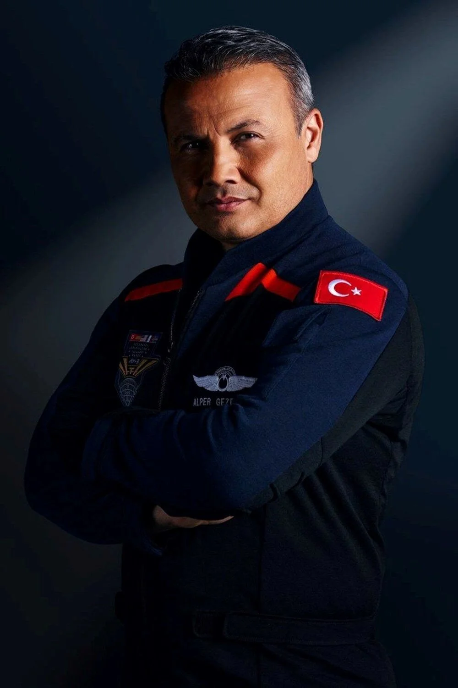

ALPER GEZERAVCI
Early life
Gezeravcı was born in 1979 in the Silifke district of Mersin, as a child of a family of Yoruk origin. After
his birth, he lived in different provinces of Turkey due to his father's profession.
Gezeravcı, who is a sports enthusiast, does activities such as scuba diving, sailing, camping and rafting, and
also has experience in mountain hiking and horse riding.
Gezeravcı, who completed his undergraduate education in Electronics Engineering at Istanbul Air Force Academy
in 2001, completed his master's degree at the Air Force Technology Institute at Wright-Patterson Air Base in
Dayton, Ohio.
Career
Gezeravcı, who served as a fighter pilot in the Turkish Air Force, flew many aircraft including T-41, SF-260,
T-37, T-38, F-5, KC-135 and F-16 for 15 years. . . He made flights. He also worked as a captain pilot at
Turkish Airlines for seven years. Gezeravcı most recently served as the Standardization Squadron Academic Wing
Commander and responsible staff at the 10th Base Command Unit in Adana.
In 2012, he was dismissed from the Turkish Armed Forces in the Izmir Military Espionage FETO Conspiracy case
and was acquitted and returned to duty in 2020.
He became Turkey's first astronaut with the launch of Axiom Space company's Axiom Mission 3 mission on January
19, 2024, at 00.49 at Kennedy Space Center Launch Complex 39 in Florida, USA.
According to the Official Gazette decision dated February 13, 2024, he was appointed as a board member of the
Turkish Space Agency.